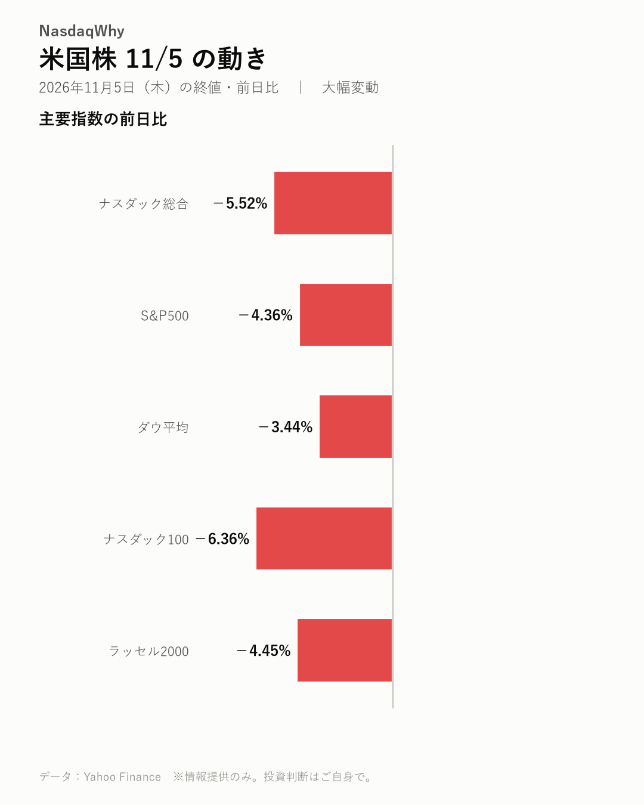
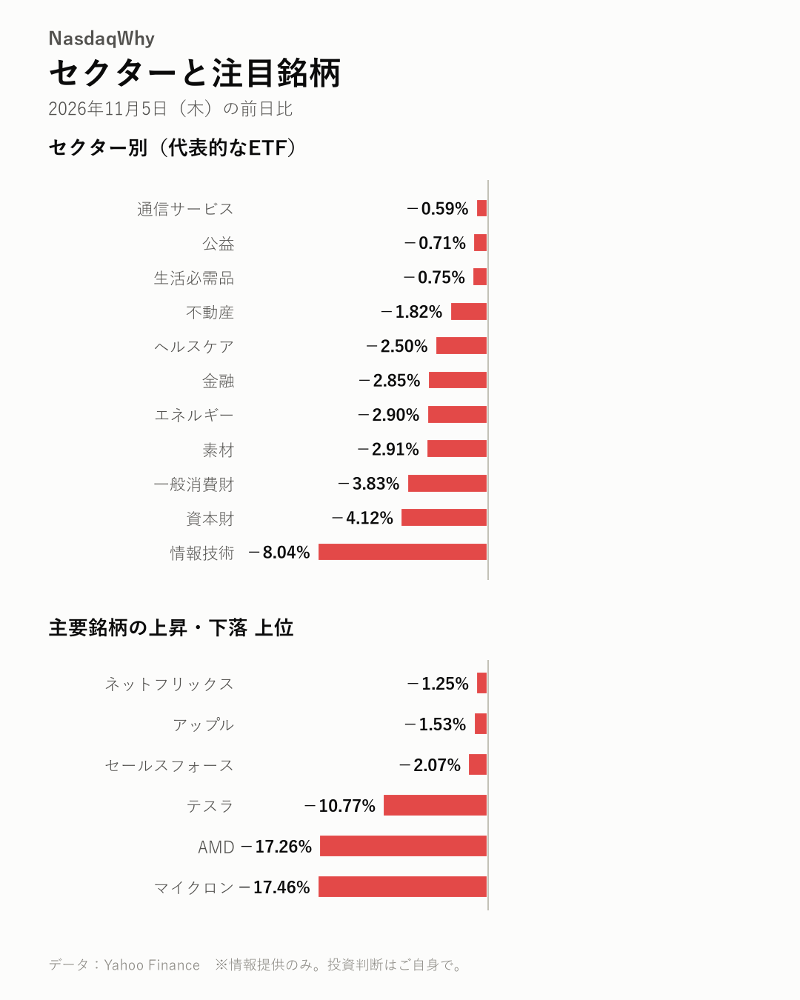

11/5の米国株：半導体株の急落が相場全体に広がり、ナスダック総合は-5.52%と大きく下げた
2026年11月5日（木）の米国市場（日本時間の翌朝更新） ｜ 大幅変動

主要指数
| 名前 | 終値 | 前日比 | 騰落率 |
|---|---|---|---|
| ナスダック総合 | 24,315.00 | -1,421.51 | -5.52% |
| S&P500 | 7,353.73 | -334.89 | -4.36% |
| ダウ平均 | 51,523.06 | -1,833.06 | -3.44% |
| ナスダック100 | 26,629.81 | -1,807.36 | -6.36% |
| ラッセル2000 | 2,729.89 | -127.06 | -4.45% |
なぜ動いた？
- シティ・リサーチがデータセンターの新たなリスクを指摘し、AI関連株に売りが広がった。AI規制への警戒も重荷になった。（出典：Benzinga、24/7 Wall St.）
- AMDは強い売上見通しを示したが、株価は-17.26%と急落した。割高感を意識した売りが半導体ETFにも及んだ。（出典：TradingView、Yahoo Finance、Yahoo Finance）
- マイクロンは-17.46%。メモリー不足の波及や、データセンターへの反発をめぐる懸念が売りを誘った。（出典：Investor's Business Daily、FXLeaders）
- 民主党の中間選挙勝利が投資家心理を冷やした。マスク氏の政治リスクが警戒され、テスラは-10.77%と売られた。（出典：Yahoo Finance、Yahoo Finance、Yahoo Finance）
深掘り：大きく動いた背景
前日の米国株は全面安だった。ナスダック総合は-5.52%、S&P500は-4.36%、ダウ平均は-3.44%。ナスダック100は-6.36%と下げが大きい。ラッセル2000も-4.45%で、小型株にも売りが及んだ。 震源は半導体株だ。Benzingaによると、シティ・リサーチがデータセンターをめぐる新たなリスクを指摘した。AI規制への警戒も重なり、AI関連株に売りが集中した。エヌビディアは-9.26%、インテルは-10.33%と大きく下げた。 AMDは決算で強い売上見通しを示し、発表直後は株価が上昇していた。それでも前日は-17.26%と急落した。記録的なAI成長はすでに株価に織り込まれたとの見方がある。割高感を意識した売りは半導体ETFにも広がった。 マイクロンは-17.46%と下げが目立つ。メモリー不足の波及や、データセンターへの反発をめぐる懸念が重荷になった。製造装置のアプライド・マテリアルズやKLAも売られた。 政治要因も意識された。民主党の中間選挙勝利が投資家心理を冷やした。テスラはマスク氏の政治リスクを警戒した売りで-10.77%。米10年債利回りは低下し、金先物は上昇した。
セクター
全セクターが下落した。情報技術は-8.04%と下げが際立ち、資本財も-4.12%。生活必需品や公益、通信サービスは小幅安にとどまった。
- 騰落率の高い順：通信サービス -0.59%、公益 -0.71%、生活必需品 -0.75%
- 騰落率の低い順：情報技術 -8.04%、資本財 -4.12%、一般消費財 -3.83%

注目銘柄
マイクロンが-17.46%、AMDが-17.26%と急落。エヌビディアは-9.26%、ブロードコムは-10.43%と下げた。テスラは政治リスクへの警戒から-10.77%と売られた。
- 上昇：ネットフリックス（NFLX）-1.25%、アップル（AAPL）-1.53%、セールスフォース（CRM）-2.07%
- 下落：マイクロン（MU）-17.46%、AMD（AMD）-17.26%、テスラ（TSLA）-10.77%
半導体トピック
- マイクロンはHBM（広帯域メモリー）で強い立場を保つとの分析が出た（Yahoo Finance）
- メモリー不足の波及が懸念され、マイクロン株が急落した（Investor's Business Daily）
- 製造装置のアプライド・マテリアルズとKLAの株価が下落した（FinancialContent）
関連市場
| 名前 | 終値 | 前日比 | 騰落率 |
|---|---|---|---|
| 米10年債利回り | 4.837% | -0.057pt | ― |
| ドル円 | 157.72 | -0.75 | -0.48% |
| 金先物 | 4,099.10 | +26.10 | +0.64% |
| 原油先物(WTI) | 90.82 | +2.70 | +3.06% |
| ビットコイン | 75,860.94 | -4,544.35 | -5.65% |
米10年債利回りは4.837%に低下した。ドル円は157.72円と円高方向に振れた。金と原油は上昇し、ビットコインは-5.65%と下げた。
今後の注目
- 12/9（水） FOMCの金融政策発表。金利の先行きをめぐる手がかりになる（公式発表）
- データセンターをめぐる新たな規制がAI需要に与える影響（Yahoo Finance、Benzinga）
出典（見出し）
- Benzinga：AI Stocks Crater as Citi Research Flags New Data Center Risk - Advanced Micro Devices (NASDAQ:AMD), Micro（記事）
- 24/7 Wall St.：AMD Tumbles 13%, NVIDIA Slides 7% as AI Regulation Fears Hit Chip Stocks; Intel Sinks 8%（記事）
- TradingView：AMD Stocks Fall 12.68% Despite a $17 Billion Revenue Outlook（記事）
- Yahoo Finance：Is Advanced Micro Devices (AMD) Fully Priced After Record AI Growth?（記事）
- Yahoo Finance：AMD’s Double-Digit Drop Is Rippling Through Your Chip ETFs（記事）
- Investor's Business Daily：Micron Stock Plunges As Memory-Chip Shortages Cause Ripple Effects（記事）
- FXLeaders：Micron MU Stock Price Faces Deep Correction as Data-Centre Backlash and Memory Market Concerns Intensify（記事）
- Yahoo Finance：AI Roundup: AMD, Apple Results Puzzle Investors, Democrats’ Midterm Win Weighs On Traders（記事）
- Yahoo Finance：Tesla and SpaceX Stocks Fall as Investors Worry About Elon Musk’s Political Risk（記事）
- Yahoo Finance：Elon Musk’s Tesla and SpaceX Stocks Fall After Democrats Sweep Elections, Senator Warns of ‘Subpoenas’（記事）
- Yahoo Finance：Micron Technology (MU) is Holding Firm on High-Bandwidth Memory (HBM)（記事）
- FinancialContent：Lattice Semiconductor, Applied Materials, AMD, Intel, and KLA Corporation shares are falling, what you need to know（記事）
- Yahoo Finance：Could Micron Technology (MU) Face Slower AI Demand From New Data Center Rules?（記事）
データ：Yahoo Finance